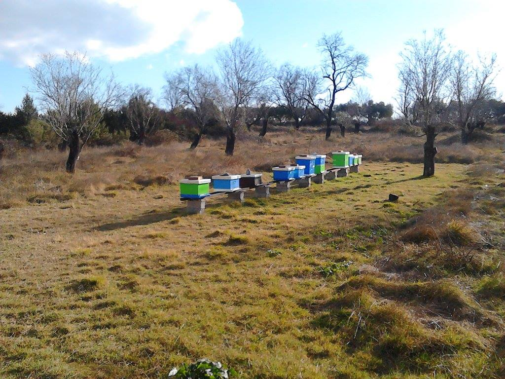
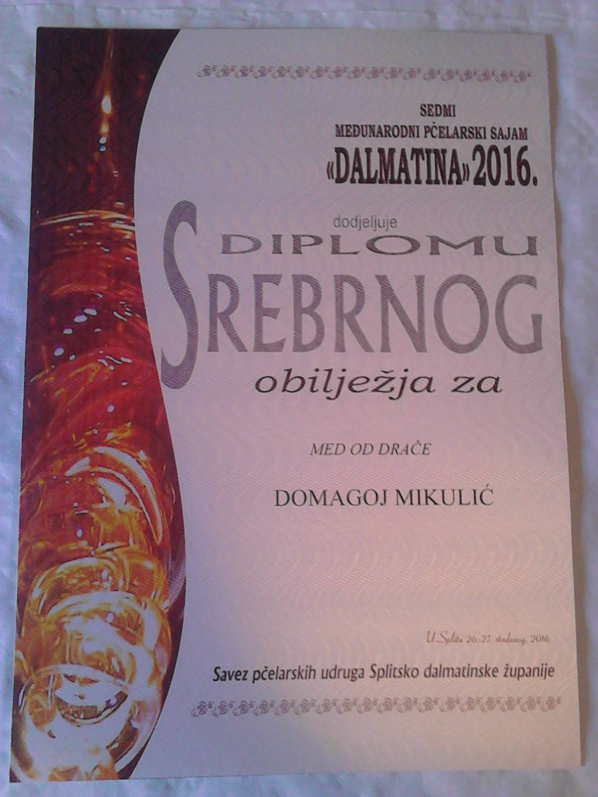

OPG Mikulić je obiteljski poljoprivredni obrt koja ima dugogodišnju tradiciju i povjerenje svojih kupaca. Sama povijest OPG Mikulić ima svoje temelje u kvalitetnom i iskusnom radu. Pčelarstvo Mikulić djeluje od 2013. godine. Konzumacijom naših proizvoda pomažete razvitku i očuvanju našeg seoskog domaćinstva te ekološkoj bioraznolikosti i održivom razvoju naše drage Hrvatske i planeta Zemlje. Svi naši proizvodi su prevencija i pomoć kod raznih tegoba u organizmu, a njihova upotreba pojačava učinkovitost. Naši proizvodi su prirodnog podrijetla, sastavni dijelovi raznih cvijetova, biljaka i drveća, te ljekoviti dodaci pčela. Najznačajnija karakteristika je da su naši proizvodi ekološki, pčele su na čistom prostoru, naše pčele ne tretiramo ni sa kakvim kemijskim sredstvima, a u pčelarenju i preradi meda koristimo isključivo opremu od prirodnih materijala: drvo, inox i staklo.


Zašto baš koristiti naš med ? -Zato što je zdraviji za ljudski organizam, -zato što je bez kemijskih primjesa, -zato što nema primjesa teških metala, -zato što u ljudskom organizmu neće stvarati neželjene posljedice, -zato jer je naš med dobiven na ekološki način. Zdravlje ne košta puno, ali bolest košta puno, mnogo novca, vremena i donosi puno patnje i bola!!! 1 kuna uložena u prevenciju je kao 10 kuna uloženih u bolest. Pouzdan lijek za tegobu tj. bolest, najminimalniji period u kojem treba taj lijek koristiti je dvostruki broj dana u odnosu na to koliko je bolest trajala. A da bi se organizam zaista stabilizirao i uveo u zdravlje treba koristiti lijek još toliko vremena.
OPG Mikulić je dobilo mnoga priznanja i diplome na raznim natjecanjima, među njima su i neka prestižna priznanja. Osim toga, nastoji se stalnom edukacijom poboljšati kvaliteta i usavršiti svi proizvodi.